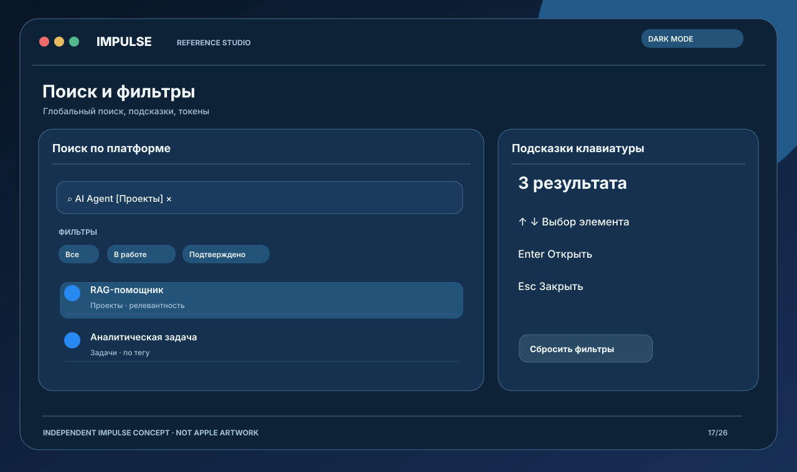
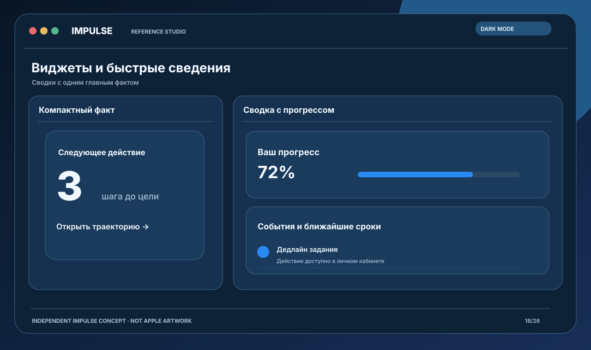
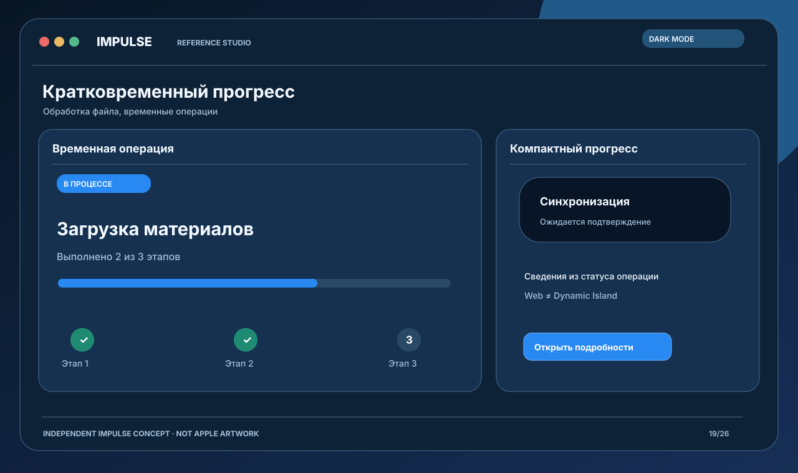
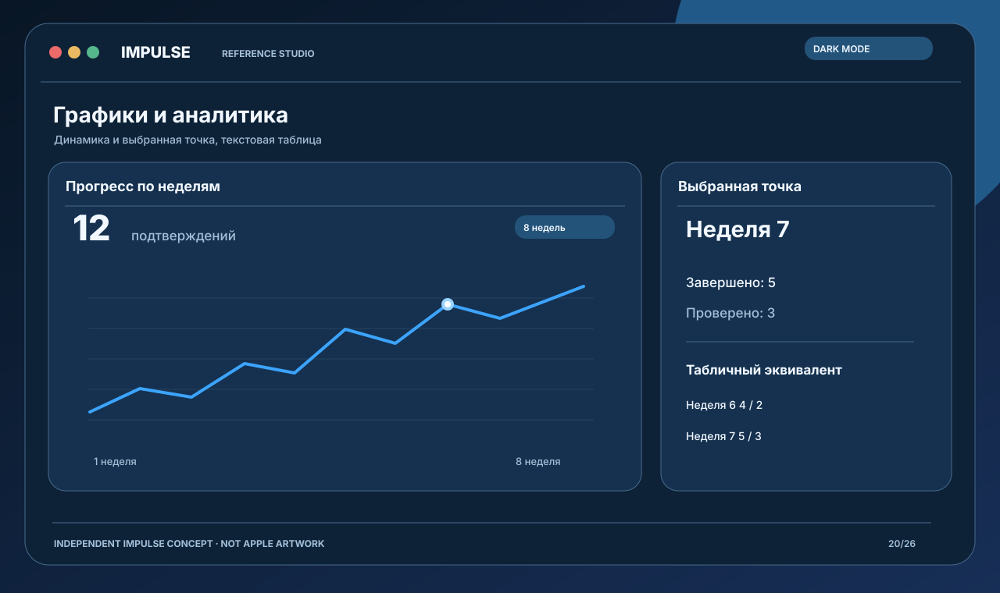
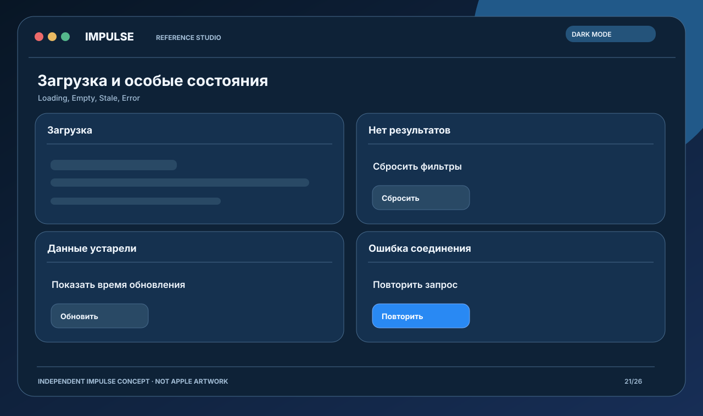
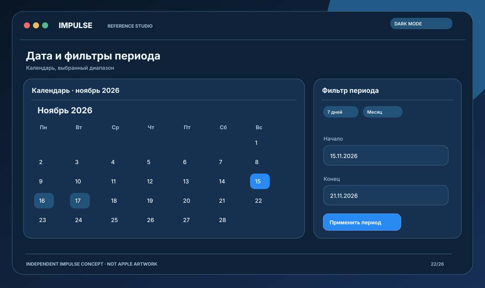
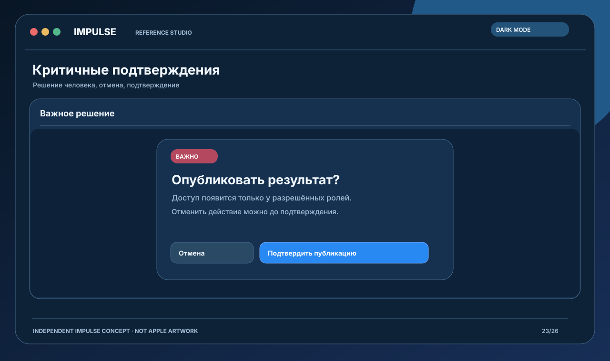
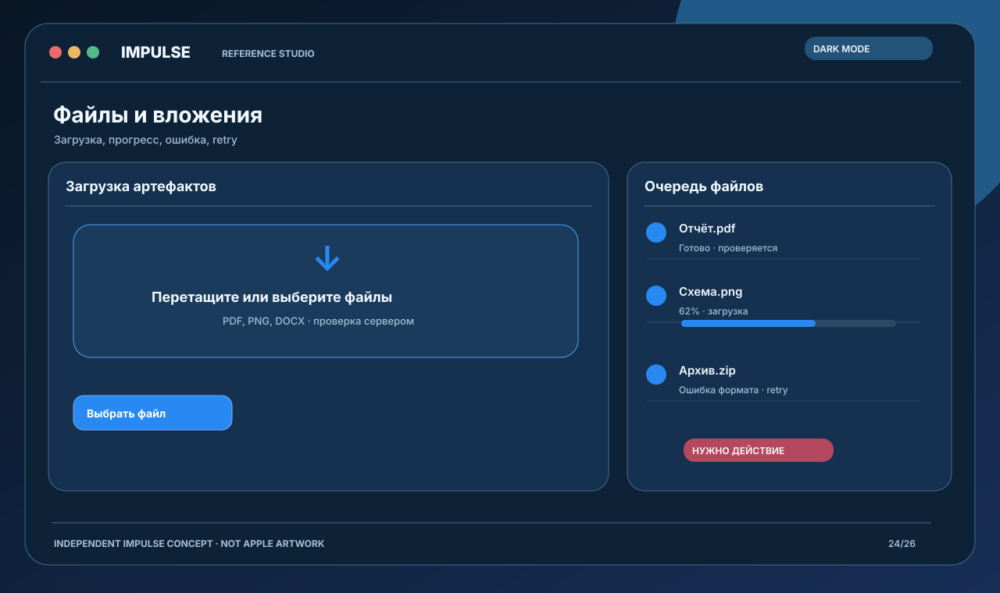
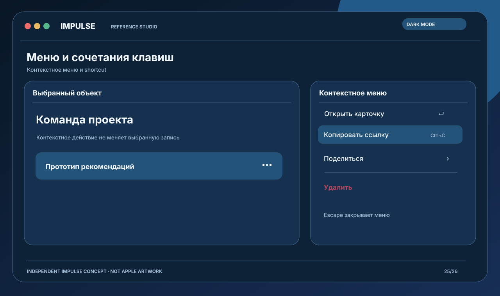
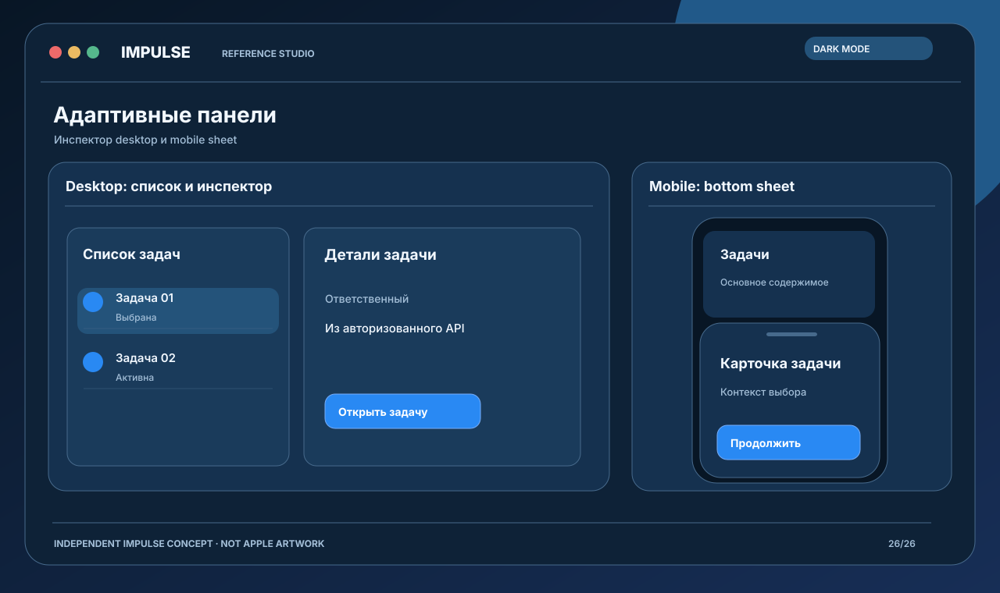

18. Виджеты и быстрые сведения
Описание и первоисточник Apple
19. Кратковременный прогресс
Описание и первоисточник Apple
20. Графики и аналитика
Описание и первоисточник Apple
21. Загрузка и особые состояния
Описание и первоисточник Apple
22. Дата и фильтры периода
Описание и первоисточник Apple
23. Критичные подтверждения
Описание и первоисточник Apple
24. Файлы и вложения
Описание и первоисточник Apple
25. Меню и сочетания клавиш
Описание и первоисточник Apple